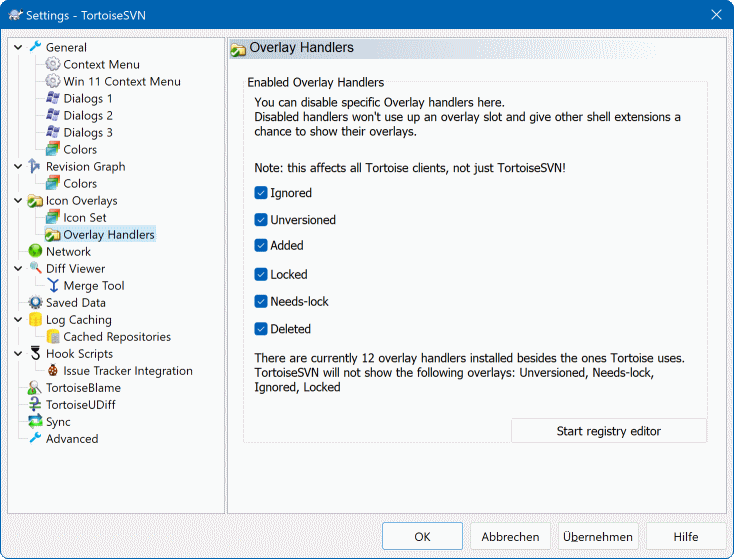
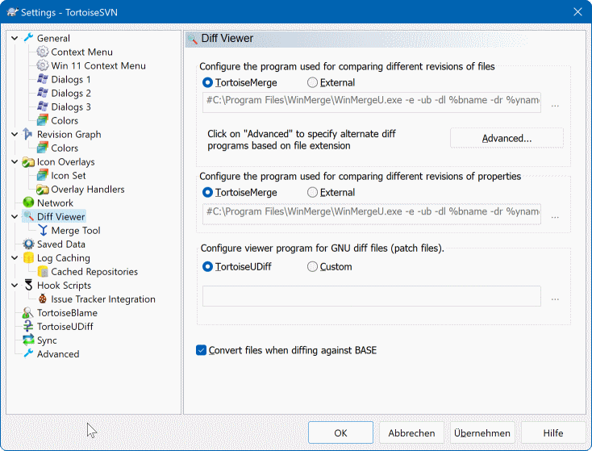

23设置面板：常用选项怎么调
TortoiseSVN 的默认设置是按「大多数人的大多数场景」定的，但总有几项不合你的习惯： 右键菜单长得看不到底、换了账号一直提示认证失败、版本图认不出哪条是主干…… 这些都藏在设置面板里，调一次长期受益。
这里的每一项都是对你本机所有项目生效的，不是针对某一个工作副本。 所以：
- 每台机器只调一次就够了，不用每个项目重配。
- 只影响你自己，不会改变服务器上的任何东西，也不会影响同事。 放心大胆地试——大不了改回来。
- 建议先挑最影响日常的两三项改掉（精简右键菜单、清除认证数据）， 其余的等真遇到问题了再回来翻。
怎么打开设置
OK 或 Apply 才会生效。
有些改动（尤其是图标覆盖相关）需要重启资源管理器、甚至重新登录才完全生效。

② 右侧 · 选项区——选中左侧某个分类后，这里显示它下面的全部选项： 下拉框、勾选框、文本框，改完点确定即可。 选项比一屏多的时候，右边会有自己的滚动条。
③ 下方 · OK / Cancel / Apply—— Apply 是「应用但不关窗」，适合连续调几项之后再一起确认； OK 是应用并关闭。改完顺手点一下，别直接叉掉窗口—— 那样改动不会保存。
④ 分类之间的跳转不用重开——点左边另一项，右边立刻切过去， 所以「调图标覆盖顺带看一下比对工具」这类来回对比很方便。
小提示：不同版本里分类的排列和个别名称会略有差异，但「左边选类、右边选值」这个结构是不变的。
最值得改的几项
| 分类 | 它管什么 | 值得动的地方 |
|---|---|---|
General常规 |
界面语言、日志显示的编码、更新相关的基础行为。 | 语言不对（界面是英文想换中文，或反之）； 提交说明里中文显示成乱码时调整日志编码。 |
Context Menu右键菜单 |
哪些命令出现在右键菜单顶层，哪些收进 TortoiseSVN 子菜单，哪些干脆隐藏。 |
菜单太长找不到常用项时，把天天用的往顶层提， 偶尔用的收进子菜单，从不用的直接隐藏。见效最快的一项。 |
Icon Overlays图标覆盖 |
文件图标上的角标怎么显示：显示哪些状态、排除哪些目录、怎么算文件夹的状态。 | 角标不显示或显示太慢时：把大而无用的目录（如编译输出目录） 排除掉，减少扫描量。 |
Dialogs对话框 |
各个对话框里的默认勾选状态：提交时默认勾什么、更新后是否自动关闭进度窗口等。 | 不想每次提交都重新勾一遍同样的选项—— 把习惯的默认值固化下来。 |
Saved Data保存的数据 |
本机缓存的凭据、历史记录、URL 历史、日志缓存等。 | 换账号、改密码后认证失败时清除认证数据——这是整个设置面板里使用频率最高的一格。 |
Diff Viewer比对工具 |
用哪个程序来做文件比对（默认是自带的 TortoiseMerge）。 | 团队统一用别的比对软件（如 Beyond Compare）时， 在这里替换成它，之后右键的比对都会走那个工具。 |
Revision Graph版本图 |
版本拓扑图怎么识别分支、怎么分类显示。 | 版本图里一堆节点挤在一起、认不出 trunk/branches/tags时， 调整分类模式让图变得清爽。 |
图标覆盖：角标显示的控制台
角标看着简单，背后是 TortoiseSVN 在实时扫描你的文件夹。 扫描范围太大，就会出现「角标半天才出来」「资源管理器明显卡顿」这类问题， 所以在图标覆盖里做取舍是值得的。

② Exclude paths · 排除路径——这一栏比上面那栏更实用。 把不需要角标的目录填进去，TortoiseSVN 就不再扫描它们。 典型该排除的：编译输出目录、依赖包目录、日志目录、临时目录。 大项目里这一项能省下大量时间。
③ Status cache · 状态缓存——角标之所以能立刻显示， 是因为后台有一份状态缓存。这里有几种缓存模式可选， 默认的自动模式对绝大多数人都是最优的。除非有明确理由，不要改它。
④ Overlay handlers · 角标样式—— 可以调整角标用哪一套图形、以及它们之间的优先级。 装了网盘、云同步之类的软件时，它们的角标会和 SVN 的抢位置， 在这里可以调整优先级，做法见下面的常见问题。
装完之后右键菜单里会多出一大串项目，很多你一年也用不上一次。精简它的入口在 Context Menu 分类里。
菜单配置区通常分两栏——左边是「显示在顶层菜单」的项，右边是「收进 TortoiseSVN 子菜单」的项，中间用箭头按钮来回移动。
把每天都要用的留在顶层：更新、提交、看改动；把偶尔用的移到子菜单：属性、加锁、导出、创建补丁；把基本不用的（比如与某类文件的关联操作）隐藏掉——这一项通常也在同一个界面里可以勾选控制。
不要一次砍太狠。先把最没用的隐藏三五个，用一两周习惯了再继续调。一个短菜单是你自己用得顺，不是越短越好。
症状很典型：明明知道新密码是对的，输了还是失败；或者压根不弹输入框，直接报认证错误。原因几乎总是同一个——本机缓存着旧凭据，TortoiseSVN 拿着旧的去请求，服务器自然不认，你都没有机会输入新的，因为它根本没问。
解决办法：右键 → TortoiseSVN → Settings → 左侧选 Saved Data → 在 Authentication data 那一行点右边的 Clear 按钮 → 点 OK 关闭 → 回到工作副本做一次更新或提交，这时会重新弹出登录框，输入新账号密码即可。
顺手提醒：在同一页上还有 URL 历史、日志缓存之类的清理按钮。如果发现地址下拉框里堆着一堆早就废弃的地址，也可以在这里一起清掉。
外部程序：让 TortoiseSVN 用你熟悉的工具
设置面板里的 External Programs 一栏，用来指定
「做某件事时该调哪个程序」。它涉及的场景不少，但平时基本不用动——
默认值已经把该配的配好了。

① 合并工具——解决冲突时用哪个程序打开。默认是自带的 TortoiseMerge，用顺手了就别换。
② 比对工具——比较两个版本时用哪个。和上一页的 Diff Viewer 分类是同一件事的不同入口。
③ 差异查看 / 合并查看——有的版本里把它们合并成一组。看你们团队的约定：如果全组都用某一个第三方工具，在这里统一指定，大家的操作体验一致。
④ 编辑器——点「编辑」类命令时用哪个程序打开文件。想让双击行为符合习惯，就把它指到你常用的编辑器。
每一项后面通常都有一个浏览按钮，用文件对话框选程序，不用手写路径。改错了想恢复，把下拉框切回默认值即可。
一次只改一项，改完马上验证。同时改五六项，出问题时你没法判断是哪一项引起的。尤其是图标覆盖和外部程序这两类，改完立刻打开一个工作副本看看效果。
把「清除认证数据」当成日常操作，别当危险操作。它只清本机缓存的登录信息，不会动服务器上的任何数据，也不会动你的代码，清完之后下一次连接重新输一次密码而已。遇到「明明密码对却连不上」，第一反应就应该是它。
① 精简右键菜单（Context Menu）——把顶层只留下更新、提交、看改动这三四个，每天都会受益。
② 排除大目录的角标扫描（Icon Overlays）——把编译输出、依赖包目录加进排除列表，资源管理器会明显轻快。
③ 确认比对工具符合团队习惯（Diff Viewer / External Programs）——如果全组约定用同一个第三方工具，就都改成一致的，免得别人说的画面你这边对不上。
其余的分类可以先放着，等真遇到对应问题再回来——设置面板不是让你一次背下来的东西。